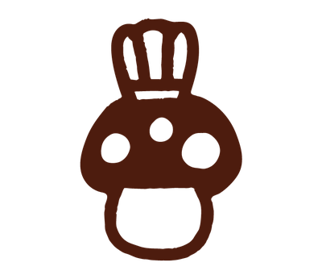
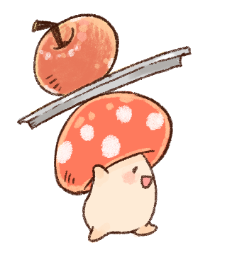
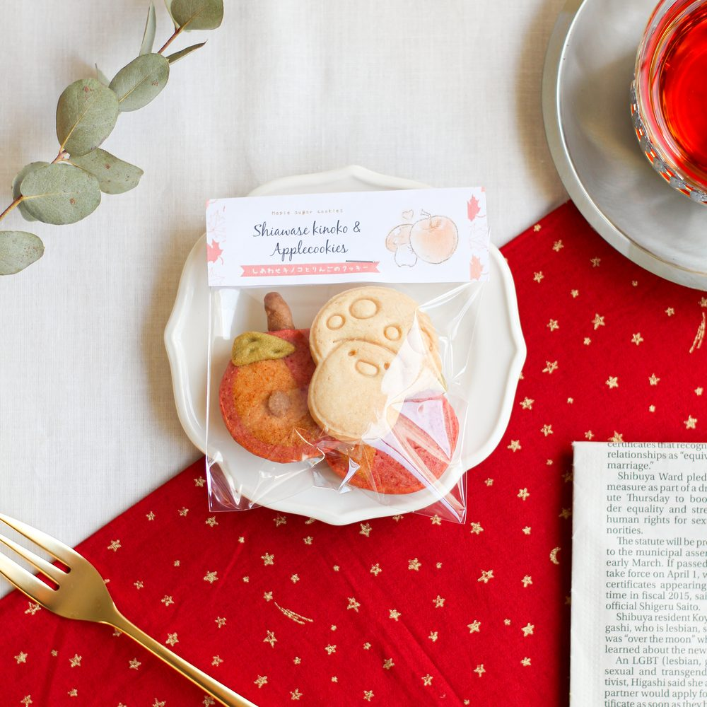
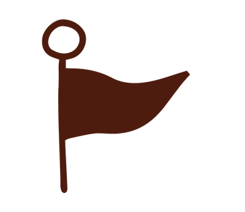

しあわせキノコのクッキー(ミニ)
当店1番の人気280円
当店の焼菓子は、オリジナルストーリー
「月暈（つきかさ）の物語」から商品ができあがります。
お話は、主人公10歳の見習いパイロットのピット少年が、
月暈が空に現れる時にだけ開く扉を抜け異世界で、
祖父の「ドラゴンの卵ドロボウ」という汚名返上と
ハロー国の住人達との心の交流を描く成長物語です。
当店名の「アチェリ」は、この国の魔女。
メインキャラクターの「しあわせキノコ」も
この国の住人です。
魔女のアチェリのためにキノコたちが作る焼菓子を
「アチェリのおやつ」と名付け、当店で販売しています。
皆さん、お月さまの周りにぼんやりと輪っかができる様子を
見たことがありますか？
それが月暈（つきがさ）、ハローとも呼ばれています。
天気が悪くなる、悪いことが起きる前兆と言われたりします。
でも、何か今まで出会ったことがない変化が
どこかで起きていると考えると
ワクワクしませんか。
この物語は、飛行機乗りの少年ピットが月暈の現れる時にだけ、
自分たちの住む世界と異世界、ハローの国を結ぶ扉をくぐり、
色々な人やモノと出会い成長していく冒険ファンタジーです。
では、物語をお話しましょう。

PointPOINT 01
「月暈の物語」の登場キャラクターや世界が、そのままお菓子の形になります。

POINT 02
身体に優しい材料を選んでいます。
POINT 03
地域の食材を使うことで地域貢献を目指しています。




価格はすべて税込です。※一部販売中止商品あり

2022.04.12
月暈の物語のプロローグをコンセプトに、主人公ピット君の飛行機やカラフルな水玉じゃくし達を入れた、冒険感溢れたクッキー缶。

2021.12.01
HALOの世界で毎年12月に行われる「メイプルレッドツリー感謝祭」をコンセプトに。開けた時におもちゃ箱のようなワクワク感。

2021.09.21
焼菓子工房オープンを記念して作ったクッキー缶。願い星のクッキーやマーサの家、満月、メイプルレッドツリーなど。
限定商品の価格・販売状況は [クライアント確認]

Store毎月第1・3 水曜日・土曜日 13:00〜17:00 オープン
地図の掲載方法（埋め込み／静的画像）は [要記入]